Festa Junina
Formas: Bel e Garibaldo procuram o triângulo para tocar na festa.
enviar para um amigo
A carta
Números: Garibaldo pede ajuda a Bel para escrever uma carta.
Barulhinho ruim
Clipe: Canção interpretada por André Abujamra e composta por Arthur Nestrovski.
Bola de basquete
Formas: Bel pede para Garibaldo procurar algo redondo que é usado em um esporte que se joga com as mãos.
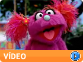
Cachecol
Convivência: Garibaldo da dicas para Bel procurar coisas pela vila.
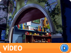
Cidade das histórias
Oralidade: Bel pede para Garibaldo contar uma história, mas ele diz que teve um dia difícil.
Chocolate
Clipe: Canção interpretada por Suzana Salles e composta por Arthur Nestrovski.
Círculos
Formas: Garibaldo mostra para Bel as coisas em seu quarto que tem forma de círculo.
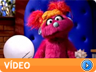
Coisas da terra
Adivinha: Bel pede para Garibaldo pensar em 3 coisas que podem ficar embaixo da terra.
Coisas de orquestra
Igor mostra como se brinca de Coisas de orquestra.
Coisas do castelo
Adivinha: Bel pede para Garibaldo pensar em 3 coisas do castelo do rei.
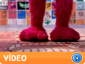
Conservação de energia
Movimento: Garibaldo ensina a Bel a economizar energia.
Contando bolas
Números: Bel tem que procurar, achar e contar 5 bolas.
Dono da história
Oralidade: Garibaldo explica para Bel o que significa ser o autor do livro.
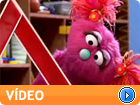
Festa junina
Formas: Bel e Garibaldo procuram o triângulo para tocar na festa.
Frente e trás
Movimento: Garibaldo quer pintar um quadro de Bel.
História na ordem
Oralidade: Bel precisa colocar as fotos na ordem da história.
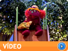
Jogo das rimas
Oralidade: Garibaldo e Bel brincam de fazer rimas.
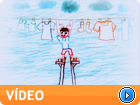
Maioral
Clipe: Canção interpretada por Eduardo Dusek e composta por Arthur Nestrovski.
Mole e duro
Movimento: Garibaldo e Bel mostram a diferença entre mole e duro
Mundo colorido
Clipe: Canção interpretada por Rubi e composta por André Mehmari e Arthur Nestrovski.
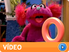
Número zero
Números: Bel descobre que tem zero figurinhas no seu álbum.
Número três
Números: Bel tem que procurar, achar e contar 3 flores.
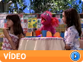
Número cinco
Números: Bel pede 5 pratinhos e 5 copinhos para fazer uma surpresa.
Número três
Números: Bel tem que procurar, achar e contar 6 bichinhos de histórias infantis.
Objetos diferentes
Formas: Garibaldo mostra para a Bel como usar a sua incrível Lupa e ver vários bichinhos diferentes.
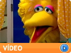
O pastor e a ovelha
Oralidade: Garibaldo conta uma história para ajudar Bel a dormir.
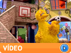
O poema
Oralidade: Garibaldo explica para Bel como se faz um poema.
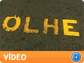
O que está escrito
Clipe: Canção interpretada por Fernanda Takai e composta por Arthur Nestrovski e Marcelo Jeneci.
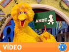
Pare e ande
Movimento: Garibaldo e Bel mostram a diferença entre pare e ande.
Parlendas
Oralidade: Bel está doente e Garibaldo leva mexericas para ela.
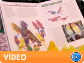
Pássaros
Movimento: Garibaldo ensina a Bel porque a peteca não é uma ave.
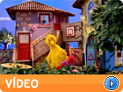
Patinete
Convivência: Garibaldo da dicas para Bel procurar coisas pela vila.
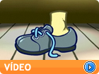
Esquerdo e direito
Clipe: Canção interpretada por Marcelo Pretto e Rubi e composta por André Mehmari e Arthur Nestrovski.
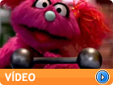
Pesado e leve
Movimento: Garibaldo ensina a diferença entre leve e pesado.
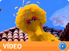
Poemas com rimas
Oralidade: Garibaldo ensina Bel a fazer rimas.
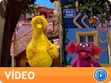
Procurando círculos
Formas: Bel e Garibaldo procuram círculos pela Vila.
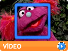
Procurando quadrados
Formas: Bel e Garibaldo procuram quadrados pela Vila .
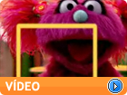
Procurando retângulos
Formas: Bel e Garibaldo procuram retângulos pela Vila.
Procurando triângulos
Formas: Bel e Garibaldo procuram triângulos pela Vila.
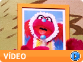
Quadro quadrado
Formas: Bel usa um quadro para cobrir uma mancha feia na parede.
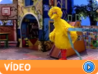
Rápido e lento
Movimento: Garibaldo inventa uma corrida em que o mais lento ganha.
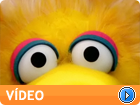
Só eu sou eu
Clipe: Canção interpretada por Zeca Baleiro e composta por Marcelo Jeneci e Arthur Nestrovski.
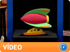
Sons da cidade
Sons: Garibaldo pede para Bel adivinhar os sons da cidade.
Sons da fazenda
Sons: Garibaldo pede para Bel adivinhar os sons da fazenda.
Sons da floresta
Sons: Garibaldo pede para Bel adivinhar os sons da Floresta.
Sons da praia 1
Sons: Garibaldo pede para Bel adivinhar os sons da Praia.
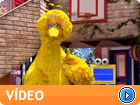
Sons da praia 2
Sons: Garibaldo pede para Bel adivinhar os sons da Praia.
Sons da praia 3
Sons: Garibaldo pede para Bel adivinhar os sons da Praia.
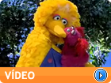
Super Garibaldo
Movimento: Garibaldo vira um super-herói para salvar a pipa da Bel.
Todo mundo é animal
Clipe: Canção interpretada por Celso Sim e composta por Arthur Nestrovski.
Todo mundo erra
Clipe: Canção interpretada por José Miguel Wisnick e composta por André Mehmari e Arthur Nestrovski.
Todos os Vídeos »
2011 Vila Sésamo
Termos de Uso
Política de Privacidade
Sobre Nós
Parceiros